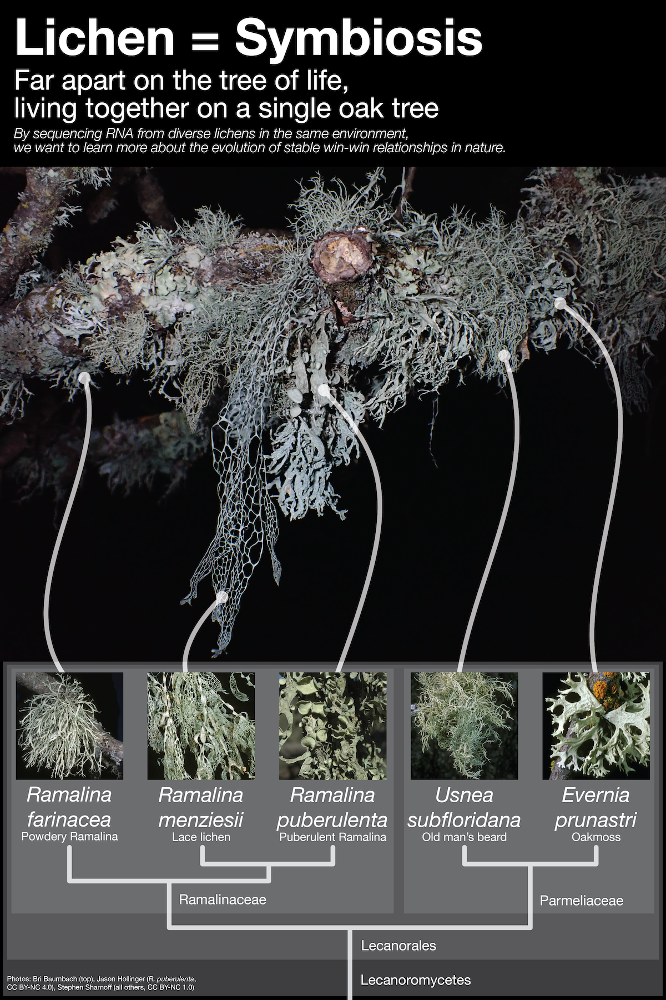

I collaborated with a local xylophile (again) on a
grant
to sequence RNA and DNA from five common California macrolichens. Stay tuned for the dataset and
publications coming in the next few years!
Photos: Bri Baumbach (top),
Jason Hollinger (R. puberulenta, CC BY-NC 4.0),
Stephen Sharnoff (all others, CC BY-NC 1.0)
